|
|||||||||||||||||||||||||||
|
|||||||||||||||||||||||||||
|
全国集会偵察山行 |
| 開 催 日 | ２０１０年３月１２〜１４日 | |||
| リーダー | 益崎健二郎 | |||
| 報 告 者 | 中川 武 | |||
| HP制作者 | 中川 武、高井（紀） | |||
| 参加者数 | ６名 | |||
| 蔵王で全国集会を催行するにあたり、幹事団で偵察を行った。地元から千石、細川両氏が参加してくれた。 初日は不忘山偵察、2日目は刈田岳〜熊野岳〜山形蔵王に下った。 全国集会の参加者は50余名、大部隊だ。偵察をキチンとやることで全国集会を成功に導きたい。 初日は吹雪、2日目はくもりのち晴れ、しかし風が強いのには苦労した。 |
| 3月13日：不忘山 |
| 天気は悪い。風も強く上部は見えない。リフトを降りて疎林の道を行く。 傾斜は緩やかだ。 広い斜面をひたすら登り尾根に上がった。尾根からは１本道。先にいる他のパーティーは天候の悪さに下る準備を始めていたが、我がパーティーは偵察に来たのでもう少し頑張る。 強風の中、尾根にスキーをデポして雪と岩の混ざった道を上に行く。風はますます強くなった。 ここで引き揚げよう。雪に足をとられながらデポ地に戻った。 強風のため立ててあったスキーが飛ばされて倒れていた。 あまり広くない尾根を下り、途中から右側の疎林の中の広い斜面に滑り込んだ。 風がよけられるところでステーキパーテイをした。横殴りの吹雪もものともせずにステーキを食べた。 |
| 白石スキー場--リフトを乗り継ぎ最上部へ--不忘岳疎林の緩やかな斜面--尾根に出る--スキーをデポ--最高到達点--デポ地点--（スキー）--緩やかな斜面（ステーキパーテイ）--スキー場 |
| 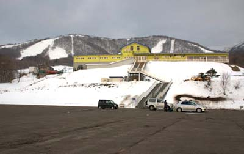 | A | 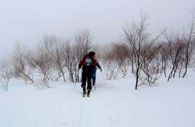 |
| 白石スキー場 | 不忘山の疎林を行くパーティー |
| 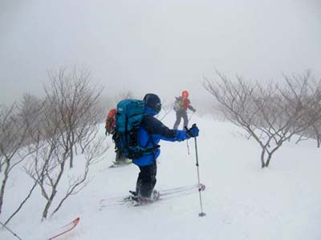 | A | 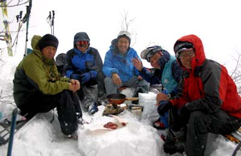 |
| 尾根筋を下る | 吹雪の中のステーキパーテイ |
| 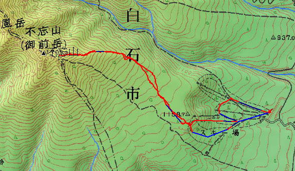 |
| 不忘山のGPS軌跡 ：荻野さんのGPSデータから作成 |
| 3月14日：蔵王越え |
| 天気は曇り。 林道を行く。途中で刈田岳より降りてくる尾根にとりつかなければならないが、風が強く尾根道を断念。ひたすら長い林道をゆく。視界は10mくらい。 １２時刈田岳レストハウスに到着。横殴りの風が吹きまくっている。 12時30分出発。眼前にお釜が広がった。今まで視界の悪いところを歩いてきたメンバーにとって強烈な風景だった。 横殴りの風を受けながら尾根道をアイゼンクトーを聞かせながら進む。振り返ると刈田岳の雄姿が見えてきた。 目の前には熊野岳の避難小屋が凍りついて真っ白な姿を見せていた。 一休みした後熊野岳山頂に向かう。天気は快晴、風は強いものの先程よりは冷たく感じない。 360度の展望、遠く鳥海山まで見渡すことができた。 頂上から少し来た道を戻り、アイスバーンを一気に下る。 熊野岳と地蔵山のコルはまさに風の通り道。スキーを脱いで肩に担ぎ地蔵山に向かうが風にあおられてなかなか前に進めない。 地蔵に着けば、終了点は見える。地蔵の斜面をスキーで横切りながらゴンドラ上部の山頂駅についた。 あとはスキー場を滑り下りるだけだった。 |
| 澄川スキー場--スキー場上部--林道--刈田岳レストハウス--稜線ー熊野岳避難小屋--熊野岳山頂--地蔵岳--スキー場 |
| 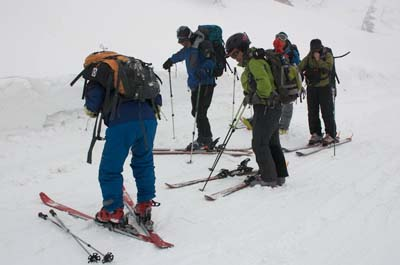 | A | 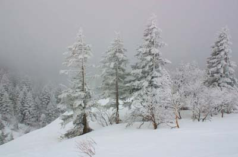 |
| 澄川より林道を行く | 林道わきの風景 |
| 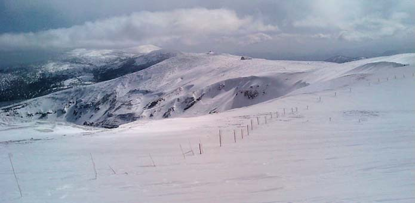 |
| 熊野岳より刈田岳を望む |
| 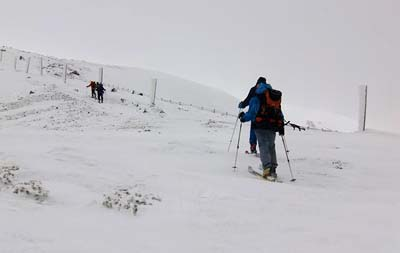 | A | 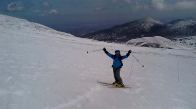 |
| 熊野岳へ向かう-1 | 熊野岳へ向かう-2 |
| 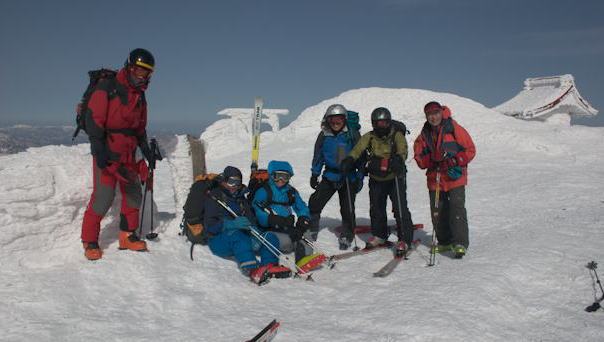 |
| 熊野岳山頂にて |
| 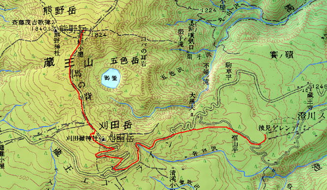 |
| 澄川ゲレンデ〜刈田岳P〜熊野岳避難小屋へのGPS軌跡 ↑↓荻野さんのデータより作成 |
| 熊野岳避難小屋〜山形蔵王スキー場へのGPS軌跡 |
| 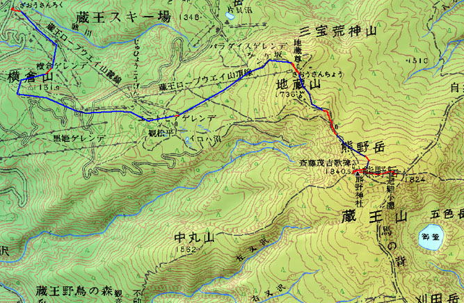 |